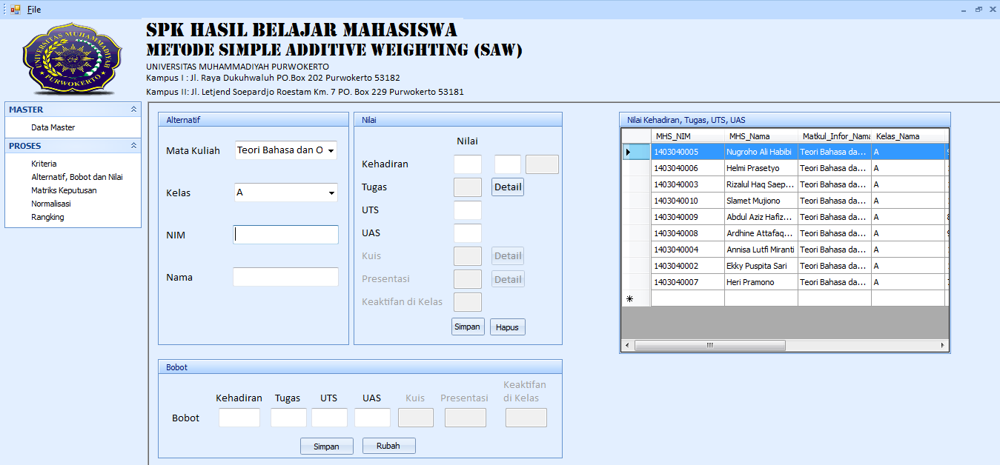
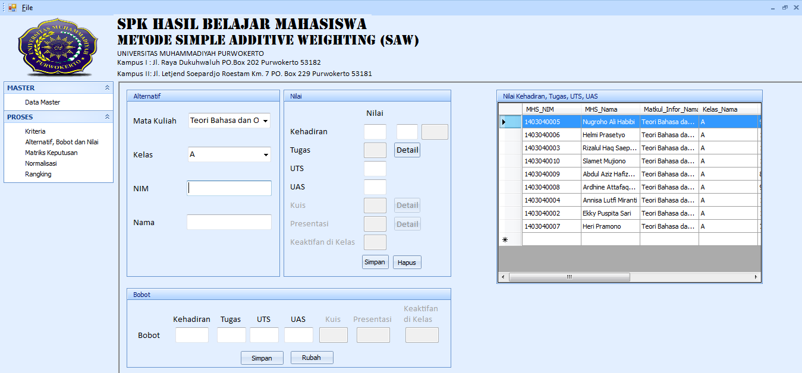
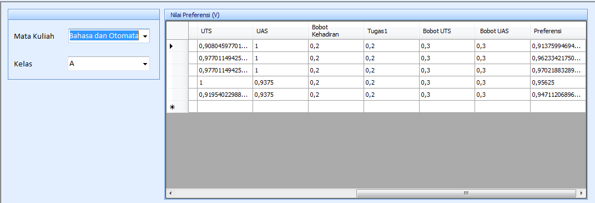
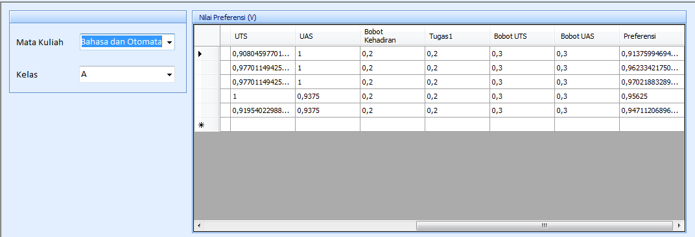
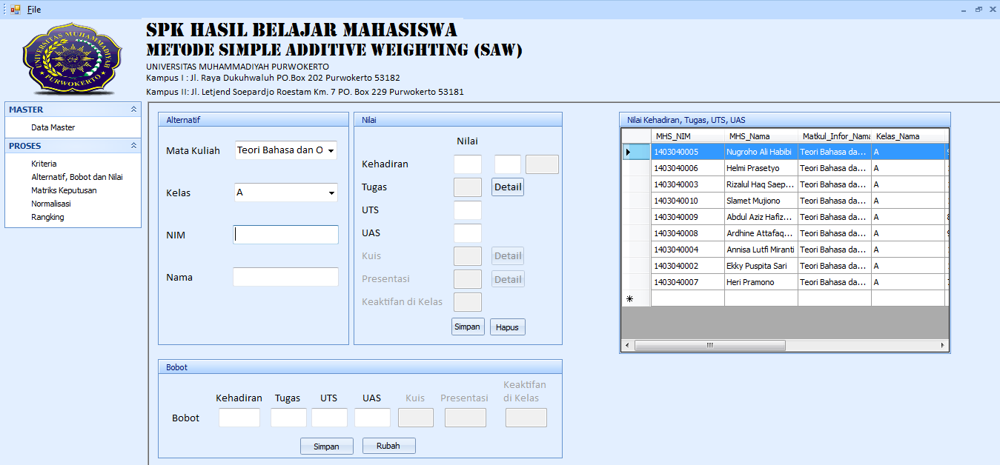
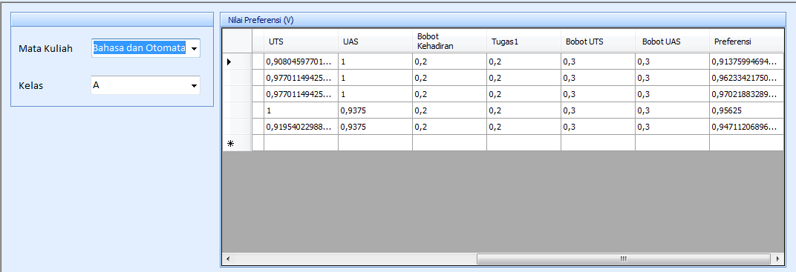

Portfolio
Sistem Pendukung Keputusan Hasil Belajar Mahasiswa


 


 
Aplikasi ini dibangun untuk membantu mendukung keputusan guna mengetahui nilai hasil belajar mahasiswa menggunakan metode Simple Additive Weighting (SAW).
Application Support
Mengawali dan menjalani karir sebagai IT Support selama kurang lebih 3 tahun, tentunya banyak ilmu yang bermanfaat dan berguna yang saya dapatkan guna menunjang pekerjaan seperti troubleshoot komputer, memastikan setiap komputer dan aplikasi yang digunakan user berfungsi sebagaimana mestinya, membuat laporan pekerjaan, membuat serta mengurus administrasi yang diperlukan dan berkoordinasi dengan tim terkait. Tidak hanya itu, bagi saya menjalani pekerjaan dengan disiplin, fokus, kerjasama tim, komunikasi yang baik dan penuh tanggung jawab merupakan salah satu kunci untuk mencapai keberhasilan dalam sebuah pekerjaan. Demi meningkatkan skill yang lebih baik lagi di bidang teknologi, saya mengikuti beberapa pelatihan diantaranya Artificial Intelligence dan IT Perbankan (Back End).
September 2019 s/d September 2020
Oktober 2017 s/d Oktober 2019
Fakultas Teknik dan Sains
Teknik Informatika - IPK 3.34
September 2020 s/d November 2020
Program : Thematic Academy Program
Tema : IT Perbankan (Back End)
Agustus 2019 s/d September 2019
Program : Online Academy Program
Tema : Artificial Intelligence
My Sql
Sql server
HTML
CSS
Java
Golang
Rest API
Docker
AWS EC2
Perbaikan Komputer
Mampu bekerjasama dalam tim
Dapat berkomuikasi dengan baik
Disiplin
Tekun
Mampu menganalisa dan memecahkan masalah
Sistem Pendukung Keputusan Hasil Belajar Mahasiswa

Aplikasi ini dibangun untuk membantu mendukung keputusan guna mengetahui nilai hasil belajar mahasiswa menggunakan metode Simple Additive Weighting (SAW).